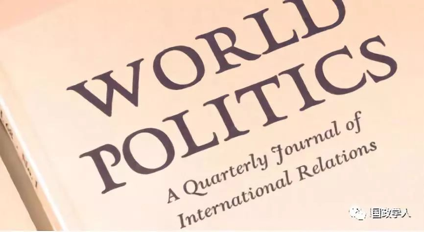
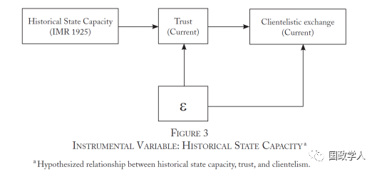
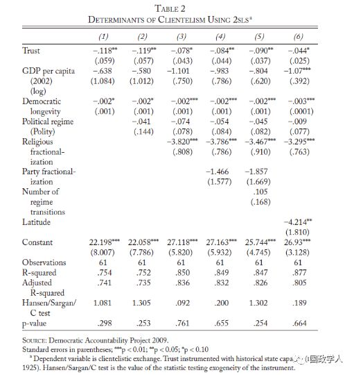
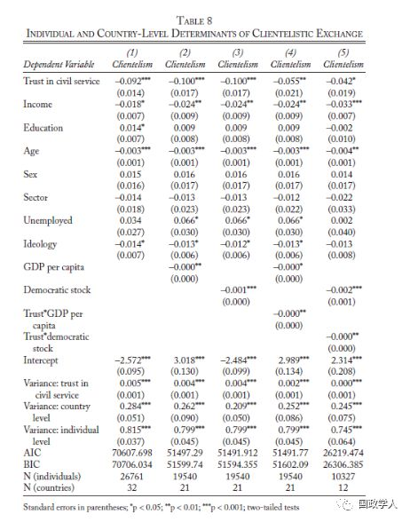

收录于合集

简 介
** 【作者】** Lenka Bustikova 亚利桑那州立大学（Arizona State University）政治学系副教授，主要研究兴趣为政党政治、投票行为、庇护主义和国家能力等，并主要关注东欧地区。Cristina Corduneanu- Huci，中欧大学（Central European University）公共政策学院助理教授，她的研究主要关注社会运动、庇护主义、官僚制改革、政府透明度和医疗健康的政治学等。本文获2017年美国政治学会比较民主化最佳论文奖。
** 【 编译 】** 兰星辰
** **【 校对 】****李雯珲
** **【 审核 】****丁伟航
** **【 来源 】****Bustikova, L., & Corduneanu-Huci, C. (2017). Patronage, Trust, and State Capacity: The Historical Trajectories of Clientelism. World Politics, 69(2), 277-326. DOI:10.1017/S0043887116000265
** 【期刊】** 《世界政治》（World Politics）是一份涵盖政治学和国际关系的综合性学术期刊，成立于1948年，由剑桥大学出版社出版。该期刊的2017年影响因子为3.25，在国际关系类别的85种期刊中排名第6，在政治科学类别的169种中排名第11。

赞助、信任和国家能力：庇护主义的历史轨迹
Patronage, Trust, and State Capacity: The Historical Trajectories of Clientelism
内容提要
本文认为，根植于 国家能力 在历史上形成的公民对政府官僚机构的 **信任（ trust）**对当今的 **庇护主义（ clientelism）**有持久重要的影响。信任会减少公民对政客个人的依赖并且促进政党和政客之间的竞争，从而为公民提供更多更完善的公共物品。国家层面的分析中，本文使用 **1925 年的婴儿死亡率（IMR，Infant Mortality Rate）**作为历史国家能力的代理变量和信任的工具变量（IV）进行两阶段最小二乘法回归（2SLS）来克服内生性问题，并通过多层模型进行了稳健性检验，实证检验结果验证了本文的理论。
文章导读
**1
**
理论与假设
首先，本文从供给和需求两个方面来解释了庇护主义的形成机理。本文认为，与公共管理者过去的交往经历塑造了 声望（ reputation），这一声望影响了个体对国家能力的 期望（ expectation），这一期望会影响政客的策略和庇护主义的国家间差异。具体而言，从需求侧的角度看，如果选民预期选举承诺将会被一个声望不佳的官僚机构履行的话，他们就会认为以提供公共服务为基础的政党平台是不可信的，因此就会转向和政客私人关系为纽带的庇护主义。从供给侧的角度看，在 历史国家能力不足的国家（ weak historical state capacity），由于知道缺乏效率的政策执行过程不太可能使选举的承诺得到兑现，政客们也不会对提供公共物品做出承诺，因此公民也会转向庇护主义。 总之，如果一个国家的行政机构表现差、公民对行政机构的信任感比较低，那么公民办事时就不会找行政机构而是会依赖他们熟悉的政客。 ****正如作者引用一位印度官员所说： “我的人民直接来找我，他们不去找警察或者其他的管理部门。当然他们可以去直接找这些部门，但是他们信任我更多。”
其次，学术界对庇护主义的形成原因给出了大致三种解释。第一种强调 经济发展是影响庇护主义的核心要素 ，既往研究已经证明了经济发展水平和庇护主义的线性或者非线性关系，认为随着收入的增加，选民通过庇护获得物品的边际效用会减少，因此经济发展有抑制庇护主义的效果，而且这一效果在发达国家更明显。作者并不试图挑战富裕将会减少庇护主义的主张，但是强调应该区分富裕和国家能力，作者强调信任来自于能力而不是富裕本身，一个历史上有好的官僚机构能力的国家可以形成好的声望，尽管可能不富裕，但也能培育公民对公共机构的信任并且减少庇护主义。因此作者强调官僚机构的能力而不仅仅是富裕程度决定了庇护主义。第二种解释强调 民主质量的作用 ，认为高质量的民主限制了个人并且增加了政党为选民提供公共物品的能力。既有研究同时表明，选举前对选民承诺的可信度受到民主制度持续时间的限制，在新近的民主国家，政党没有足够的时间建立提供公共物品的声望，因此更容易导致庇护主义。第三种解释关注 声望 ，而这也是本文的核心。作者强调，声望对庇护主义的影响要受到对国家的信任的调节，而不是对政党信任的调节。政党的声誉由国家能力所塑造并且受民主持续时间的限制，这是因为先于政党产生的对无能的官僚机构的负面记忆会使选民更加猜疑，所以政党的行动将会受到限制。对国家能力的负面记忆和声望带来的不信任导致了庇护主义，另外从庇护主义得到的直接收益比公共物品供给的不确定性更加具有吸引力，这就导致了这些国家对庇护主义的路径依赖的均衡。
本文把 **国家能力（ state capacity）**定义为在一国领土范围内，创造官僚机构权威、独立、效率和渗透力的人力和物质资本投资。随后，作者又依据查尔斯·蒂利(Charles Tilly)、玛格丽特·列维(Margaret Levi)、罗斯坦(Rothstein)的理论和越南、东欧等地的案例从理论和实际层面说明了历史上的国家能力决定公民信任。具体而言，蒂利认为国家建构和民主化就是一个将私人的信任网络转为公共领域的历史过程。列维指出值得信赖的公正的官僚机构是公众对对政府政策的支持的根基。罗斯汀提出信任作为一种集体记忆和历史国家建构相关。近期对越南的研究显示在前殖民地时期有更强的地方官僚传统的村庄的公民更有可能有效率地实现公共物品供给，东欧的案例也与之类似。在完成了这些理论准备后，作者提出了三个假设：
假设一，历史上国家能力更强的国家通过信任降低庇护主义 ****
假设二，在同等发展水平下，历史上国家能力越强，国家庇护水平越低 ****
假设三，民主的持续时间会降低庇护主义，但是一些老牌民主国家由于历史上较低的国家能力降低了信任，也会陷入庇护主义
**2
**
工具变量的选择与理由
对官僚机构的信任具有很强的 内生性 ，这是本文需要解决的重要问题。
作者追溯历史，提出用1925年的婴儿死亡率作为历史上国家能力的代理变量和信任的工具变量。 具体理由可以分为以下四个方面： ****
第一， 十九世纪末二十世纪初的英法德等主要西方大国在战争威胁和海外殖民地民族独立运动的压力下，都认识到了降低婴儿死亡率在补充兵员和维护殖民统治的重要作用，国内各方势力在降低婴儿死亡率这一目标上达成了共识，政府通过改善医疗等基础设施和增加公共物品的长期人力和物质资本投入以降低婴儿死亡率，这就促进了公共服务的发展、增强了国家能力从而提升了公民对官僚机构的信任。在降低婴儿死亡率这一点上，当时的西方国家和其他国家有很大差异。
第二，在区分失败国家和稳定国家的指标中，婴儿死亡率最为稳健。 ****作者认为婴儿死亡率准确记录了国家对人口和领土的控制力以及增税和执行政策的能力。而且婴儿死亡率微小的下降都需要长期的投入。另外，婴儿死亡率的造假可能性比较小，数据相对来说可信性高。
第三，婴儿死亡率作为工具变量的效度还来自于与其他变量相比，婴儿死亡率相对更加独立地影响对官僚机构的信任。 ****举例来说，比如与人均 GDP相比，阿根廷的人均GDP在1925年左右与法国、丹麦、加拿大类似，但是它的婴儿死亡率比这三个国家大约高30%。而一度与瑞典经济发展水平类似的智利和乌拉圭的婴儿死亡率分别是瑞典的两倍和四倍。另外，一些被认为可能影响婴儿死亡率的因素如纬度和殖民遗产等和婴儿死亡率的统计相关性并不显著。
第四，作者对选取 1925年两次大战之间的时间点的婴儿死亡率做出了解释。 ****简要而言，作者认为这一时间段正好处于西方大国为降低婴儿死亡率进行了一系列努力之后和女性普选权得到全面实现之前。一方面官僚机构已经为降低婴儿死亡率付出努力而极大地改进了公共服务，另一方面作者认为在二战后测算的继续下降的婴儿死亡率的可能是出于一些政党为了获得女性选票的动机而不是官僚机构改进公共服务的努力，这就导致了婴儿死亡率做为历史国家能力的代理变量可能会失效。因此作者选择 1925年的婴儿死亡率恰到好处。基于以上四个方面，婴儿死亡率作为历史上国家能力的代理变量和信任的工具变量具有更高的效度。具体关系如下图所示

即度量历史国家能力的代理变量1925年婴儿死亡率具有外生性，并且和内生解释变量信任具有高度相关性，满足工具变量理论上的要求（工具变量具体的效度检验可以参考原文）。
随后，作者进行了一系列统计检验。作者选取庇护主义作为被解释变量，这一变量度量了日常消费品分配、社会政策权利优先权等五个方面的庇护主义，为李克特量表定序变量（1-4），数值越大庇护主义越强，数据来自Democratic Accountability and Linkages Project调查。个人层面的庇护主义变量来自2010-2014世界价值观调查数据。稳健性检验又用到了治理效力指标（world governance indicator of government effectiveness, WGI）和Relative Political Allocation(RPA)数据。解释变量包括历史国家能力和信任，数据来自世界价值观调查，并通过Historical political extraction 1960-1970和horizontal health inequality 1992-2002两个数据集对国家能力的度量进行了稳健性检验。其他控制变量人均GDP对数、民主持续时间、宗教信仰分化程度（Religious Fractionalization）和政党分化程度（party fractionalization），纬度，殖民历史等，个人和国家跨层分析中，控制变量又包括其他人口统计学控制变量。国家层面分析中基本模型采用两阶段最小二乘法2SLS，跨层分析中主要采用普通的OLS估计。主要统计结果如下图所示，稳健性检验可以参考原文和附录。统计结果中 trust 的系数显著为负、trust和人均GDP以及民主持续时间的交互项也显著为负，这分别验证了作者的三个假设。


**3
**
结 论
本文为理解政治庇护主义提供了新的视角，认为历史上对官僚机构能力的信任塑造了现在的庇护主义程度，官僚机构的能力塑造了一种信念，这种信念认为庇护主义可以被去个人化的更有能力提供公共物品的公共管理机构来替代，也使得政党能够做出更可信的承诺。与之相反，缺少提供公共物品的能力会造成不信任从而导致庇护主义。
【简评】
**
**
相较于顶刊其他定量研究论文令人目眩的高深计量方法，本文的计量手段毫不复杂。 本文的优势在于深入分析了庇护主义发展的历史轨迹从而为解释庇护主义提供了新的理论视角，并准确和巧妙地使用了 1925 年婴儿死亡率作为信任的工具变量和国家能力的代理变量进行了全面严密的理论论证和实证检验。 除理论贡献外，在方法论层面，本文无疑是一个将历史与社会科学进行有机结合的优秀作品，值得借鉴。
更多阅读
【重磅速递】约瑟夫·奈：美国霸权的兴衰：从威尔逊到特朗普 | 国政学人
【重磅推荐】巴里·布赞：英国学派视角下的中国崛起 | 国政学人
【重磅速递】米尔斯海默：注定失败：自由主义国际秩序的兴衰 | 国政学人
【百年国关】历史在国际社会中的应用：从巴黎和会到现在 | 国政学人
【国际组织】IO杂志：联合国维和行动的武力运用问题研究 | 国政学人
【国际秩序】为什么自由主义国际秩序理念将美国外交政策引入歧途？| 国政学人
【关系理论】“关系”：世界政治关系理论的中国话语 | 国政学人
【英国学派】张勇进：中国与全球国际社会中的自由主义等级制：实力与对规范变迁的协商 | 国政学人
【地区秩序】论经济实力的可转化性：中国经济崛起与东亚安全秩序 | 国政学人
【中俄关系】不得已的伙伴：系统-单元动态与中俄关系 | 国政学人
【IPE研究】美国对外贸易政策的“1934年体制”是如何形成的？| 国政学人
【现实主义】斯蒂芬·沃尔特：傲慢的终结与美国克制的新时代 | 国政学人
【理论批判】系统、层次与结构理论：沃尔兹的理论并非系统理论 | 国政学人
【外交政策】单极体系下的不和平状态与美国外交政策 | 国政学人
【欧洲研究】资本主义多样性与合规：加入欧盟后中东欧的经济改革 | 国政学人
【理论研究】吴建树：权力、道德、均势、联盟与摩根索——汉斯·摩根索的经典现实主义思想再解读
【友谊国关】将友谊重新引入国际关系：从中国到西方的关系本体论
【定量研究】政党实力和经济增长（Party Strength and Economic Growth）| 国政学人
【台湾学者】向骏：美国从“霸权稳定”到“霸凌不稳定” | 国政学人
【理论研究】巴里·布赞等：重思日本：主流国际关系理论的偏见 | 国政学人
【南亚研究】南亚对冲：中印竞争中经济和安全利益的平衡 | 国政学人
【外交政策】美国霸权的自我毁灭：华盛顿浪费了单极时代 | 国政学人
【定量研究】谁在欧洲议会中领导委员会？ ——基于2014年欧洲议会选举的研究 | 国政学人
【定量研究】暴露于难民危机之中会让当地人更有敌意吗？| 国政学人